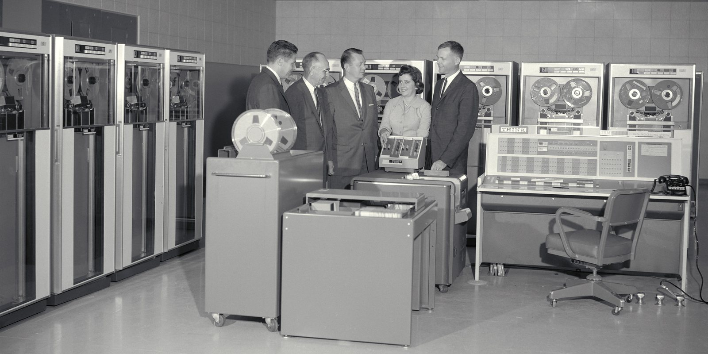

Six Million Tokens in Eleven Minutes
SEPTEMBER 10, 2026

Some friends and I have been going around on a question that sounds like a joke and isn't. The example on the table was six million tokens in eleven minutes — the meter reading on an AI session whose entire output was a blog post. Is that going to be considered normal? Is it going to be worth it? And if that is what the tool costs to run properly, what happens to the people who can't pay for it — does AI become one more thing where the well-off get the full version and everyone else gets a demo?
I have some standing to ask, because I have done worse. Last week I asked a coding agent to audit a codebase, and instead of reading the code it spawned thirty-one helpers to read it for me. They ran until my session limit cut them off, and I got exactly one result back. The counter said about 4.7 million tokens. I don't pay per token — I pay a flat monthly subscription that comes with a usage ceiling — so what I lost was the rest of the day's ceiling, not money. But it was the same feeling as watching a taxi meter run while the driver circles the block, and it made me want to actually do the arithmetic rather than keep having the argument.
What Do Six Million Tokens Actually Cost?
Start with what the number is. A token is roughly three-quarters of a word, so six million of them is about four and a half million words — eight copies of War and Peace, read in eleven minutes. That sounds impossible because it is; nobody produced four and a half million words. What a coding agent does on every step is re-read its whole conversation so far before deciding the next thing, and the meter counts every re-read. Most of the six million were the same words, read again and again. That is why the companies price a re-read at a tenth of a fresh read.
So here is the range, at the published list prices for the model I mostly use, which as of today lists at $5 per million input tokens, $25 per million output tokens, and 50 cents per million for a cached re-read:
- If every one of the six million were a fresh read at full price: $30. That is the ceiling, and it is not how a real session looks.
- If, as is typical, nearly all of them are cached re-reads: about $3, plus whatever the model wrote. A hundred thousand tokens of output — seventy-five thousand words, a short novel — would add $2.50.
- The electricity underneath it: Epoch AI's 2025 estimate for a typical chatbot query is about 0.3 watt-hours. At twenty cents a kilowatt-hour that is six thousandths of a cent per query. Even a long agent session is a few cents of power.
So the honest answer to "what did eleven minutes cost" is: somewhere between a coffee and a lunch at list price, probably nearer the coffee, and a rounding error in electricity. I don't have my friend's exact mix of reads and writes, and it doesn't matter — the point is that the scary number was the token count, and the token count is the wrong thing to be scared of. It is the odometer, not the fuel bill.
One more thing about the unit, because it's the kind of detail a ledger should notice. A token is not a fixed quantity. The same pricing page notes that the newer models use a tokenizer that produces roughly 30 percent more tokens for the same text. Six million tokens on one model is about four and a half million on its predecessor. Comparing token counts across models is comparing prices in two currencies with different inflation rates. Count dollars, or count words. Never count tokens.
Is the Price of AI Going Up or Down? Both — and That Is the Whole Story
There is no single price of AI. There are two, and they have been moving in different directions for five years.
![Log-scale chart of the list price of a million input tokens, November 2021 to September 2026. Two lines start together at $60 for GPT-3. The cheapest model of GPT-3 quality falls to six cents by November 2024, a thousandfold drop. The most capable model on sale falls only to $30 for GPT-4 in March 2023, $15 for Claude Opus 4.1 in August 2025, and $10 for Claude Fable 5.1 in 2026, with Claude Opus 5 at $5. A lone marker shows DeepSeek R1, an open-weight model near the frontier, at 55 cents in January 2025.](img/ai-price-two-speeds.svg)
The first price is what it costs to buy a fixed amount of intelligence — say, the capability GPT-3 had when it opened to the public in November 2021, at $60 per million tokens. Guido Appenzeller at a16z tracked this and found that by late 2024 the cheapest model matching GPT-3's benchmark score cost six cents per million — a thousandfold drop in three years, or ten-fold per year, which he named LLMflation and which is faster than the price of computing fell during the PC era or bandwidth during the dot-com boom. For a GPT-4-level model the drop over a shorter window was about sixty-fold. Whatever the best model can do today, you will be able to buy that same capability for a tenth of the price next year and a hundredth the year after. That line is the one that answers my friends' question.
The second price is what it costs to buy the best model on sale that day, and it has barely moved by comparison. GPT-4 launched in March 2023 at $30 per million input tokens. Claude Opus 4.1 listed at $15 in 2025. Today the top of Anthropic's sheet is $10 and the tier below it is $5. Six-fold in five years, against a thousand-fold for the commodity line. The frontier is priced like a frontier — scarce, and worth what people will pay — and every year there is a new one.
Which price you pay depends on which question you're asking. If you want last year's model to draft an email, the price is falling off a cliff and will keep falling. If you want this year's best model to think for eleven minutes about something hard, you are buying the scarce thing, and the scarce thing is not getting cheap the way the rest is. Almost every argument about whether AI is "expensive" is two people pointing at different lines on this chart.
And notice the direction of the pressure even at the top. A mid-tier model launched this year at what was announced as introductory pricing, with an increase scheduled for September 1. September 1 came and went; the price sheet now carries a note that the increase "will not occur" and the low price is the standard price. A company that can raise its prices and chooses not to is telling you something about its competition.
Why Cheaper AI Means More Spending, Not Less
So will it be normal to spend six million tokens on a blog post? Yes, and it will be quaint. Not because we'll all be rich, but because the unit will have stopped meaning anything — the way nobody today counts the CPU cycles in a web page, or asks whether it's wasteful to stream a film that would have filled a shelf of floppy disks.
The photograph at the top of this entry is what the argument looked like the last time around. That is an IBM 7090 being installed at NASA Ames in September 1961. It sold for $2.9 million, or rented for $63,500 a month — call it ten times that in today's money, my own rough inflation, not anyone's official figure. Computer time on a machine like that was sold by the hour. You submitted your job as a deck of cards and waited for your turn, and a serious question in 1961 was which projects were important enough to be allowed on it at all. The five people in that photo are among the people who got to decide. A child's phone now has more computing power than the room, and the child uses it to watch other children open toys. Nobody at Ames in 1961 would have called that a sensible use of a computer. It is nonetheless what happened, and it happened because the price collapsed faster than anyone's sense of what the machine was for.
Economists have a name for this. In 1865 William Stanley Jevons pointed out that more efficient steam engines had not reduced Britain's coal consumption but increased it — cheaper power found more uses than the savings gave back. Microsoft's Satya Nadella reached for exactly that phrase in January 2025, the week a Chinese lab released a near-frontier model at a fraction of the usual price and Nvidia lost $600 billion of market value in a day: "Jevons paradox strikes again," he wrote. "As AI gets more efficient and accessible, we will see its use skyrocket, turning it into a commodity we just can't get enough of." He was talking his own book — Microsoft sells the compute — but he was also right. Total spending on AI will go up as the price per token goes down, because the number of things worth doing at a tenth of a cent is vastly larger than the number worth doing at a dollar. Eleven minutes and six million tokens for a blog post is not the end of that curve. It is early on it.
Who Is Paying for the Free Tier?
Here is the part that belongs in a ledger. Someone is paying for those tokens, and today it is mostly not the user.
Alphabet, Amazon, Microsoft and Meta have guided to between $720 and $745 billion of capital spending in 2026, most of it data centres and the chips inside them. On Epoch AI's count, the combined quarterly spending of those four plus Oracle has quadrupled since GPT-4 came out — from about $37 billion a quarter in mid-2023 to $141 billion a quarter at the end of 2025, growing 72 percent a year. That is the price of the token that the price sheet doesn't show. A cached re-read costs fifty cents a million not because that is what it costs to produce but because the hardware to produce it was bought with a cheque the size of a mid-sized country's GDP, and the cheque is being paid off across every token anyone runs, and then some. The free tiers that most people use are paid for out of the same cheque, by investors who expect to be repaid later.
"Later" started this year. On February 9, 2026, OpenAI began showing ads to logged-in adults on ChatGPT's Free and Go tiers in the United States. Plus, Pro, Business and Enterprise subscribers see none. There is also, per the company's announcement, an option to opt out of the ads in exchange for fewer free messages a day — which is the whole two-tier economy in one sentence. You can pay in money, you can pay in attention, or you can pay in rationing. The company says the ads will not influence the answers. I have no reason to doubt that today. I also remember when a search engine's ads were clearly marked and set apart from the results, and I remember how that turned out over twenty years, and I would not sign a long lease on the promise.
That is the divide I actually expect — not between people who have AI and people who don't, but between people whose AI works for them and people whose AI is also working for someone else. It has happened before, with the same shape, and we have the numbers.
Will There Be an Underclass Without AI? Ask the Digital Divide
In 1995 the Commerce Department published a report called Falling Through the Net, a survey of America's information "have nots" — rural, urban, poor — which is where the phrase "digital divide" came from. The worry was precisely my friends' worry: that the computer and the modem would become the new literacy, and the people who couldn't afford them would be locked out of the economy that ran on them.
Thirty years on, Pew's numbers are about as clean an answer as social science ever gives. In 2000, 52 percent of American adults were online and 1 percent had home broadband. In 2025 it is 96 percent and 78 percent, and 91 percent own a smartphone, up from 35 percent in 2011. By the 1995 definition, the divide closed. The have-nots got it. They got it because the price fell — the same LLMflation line, a generation earlier — not because anyone gave it to them.
![Three horizontal bars, one per era, each representing everyone. In 2000 the divide runs between the 52 percent of American adults online and the 48 percent who were not. In 2025, 96 percent are online and 91 percent own a smartphone, but a hatched band marks the 16 percent who are phone-only with no home broadband — 34 percent of adults under $30,000 in household income against 4 percent of those over $100,000. In the AI era the bar is full, with a hatched band for the free tier that carries ads, a daily cap and last year's model, against an ad-free paid tier with the frontier model.](img/ai-divide-moves-inside.svg)
But it did not disappear. It moved inside. Pew's January 2026 read puts home broadband at 94 percent of households earning $100,000 or more and 54 percent of those under $30,000 — a forty-point gap that has held steady for years — and 16 percent of all adults are now "smartphone-dependent," online through a phone with no home connection: 34 percent of the low-income group against 4 percent of the high. Everybody has the internet. The poor have the version you can't write a résumé on.
That is the template, and I would bet on it repeating almost line for line. Everybody will have an AI, because a chatbot at last year's quality will cost roughly nothing to serve. The divide will run inside that: between the frontier model and the model from eighteen months ago; between no daily cap and a cap; between answers that serve you and answers that serve you plus an advertiser; between the version you can build a business on and the version you can ask for a recipe. Not access. Quality, and whose side it's on.
The Ceiling That Protects Everyone Else: Open Weights
There is one structural reason the top tier can't simply charge whatever it likes, and it is the reason I'm less worried about a priced-out underclass than I was before I started writing. On January 20, 2025, DeepSeek released R1 — weights published under the MIT licence, priced at 55 cents per million input tokens and $2.19 output — against $15 and $60 for the OpenAI model it was being measured against. The weights being public matters more than the price. It means anyone with the hardware can run a near-frontier model themselves, and dozens of companies immediately did, at whatever margin they liked.
You cannot charge a monopoly price for a thing whose free substitute is twelve months behind you. That is the lone green marker on the chart above, roughly thirty-fold below the frontier price of its day and about a year behind it in capability. As long as open-weight models keep coming — and they have kept coming, from more than one country — the frontier labs are pricing against the cost of running last year's model yourself. That is the ceiling on the gold line, and it is the single best protection the "plebs" have. It is also the thing I'd watch most closely, because it is a policy choice as much as a technical fact: a government that decided open weights were too dangerous to publish would remove that ceiling in one stroke, and the two-tier world my friends are worried about would arrive by regulation rather than by price.
What the Scarce Thing Actually Is
I've come to think tokens are the wrong thing to be anxious about, for the same reason nobody is anxious about kilowatt-hours: the price is falling, the supply is growing, and the amount you use tracks what you're doing with it rather than the other way round. What's scarce is three things, and none of them is a token.
The first is the frontier at the moment it's the frontier. That will always be priced like a premium good, because it is one, and there will always be someone for whom the extra capability is worth the extra money — the same way a rendering farm is worth it to a film studio and not to me. That is fine. Last year's frontier is this year's commodity, and I've yet to hear a serious argument that a model from eighteen months ago is useless for ordinary purposes.
The second is honesty in the free tier — the thing the ads question is about. An answer engine that answers to two masters is worse than one that answers to none, and the tier most people will use is the one most likely to end up with two. That is the fight worth having, and it is a fight about business models, not about GPUs.
The third is judgment, and it is the one that doesn't show up on any price sheet. My 4.7 million tokens were not a cost problem. They were a judgment problem: I asked for thirty-one helpers when I should have asked for one, the machine gave me exactly what I asked for, and the bill was the bill. Cheap intelligence makes the confident wrong answer cheap too. The person who can tell when the output is wrong gets more out of a mediocre model than the person who can't gets out of the best one. That divide is older than computers and it will outlast this one, and no subscription tier closes it.
Will it be normal to spend six million tokens on a blog post? Yes, soon, and then it will be quaint — the way a $2.9 million computer that took a room is quaint. The count is an odometer, not a fuel bill; at today's list prices eleven minutes of it is a coffee to a lunch, mostly re-reads billed at a tenth, and the electricity underneath is a fraction of a cent.
Will it stay affordable? The price of a fixed level of intelligence has fallen a thousandfold in three years and is still falling. The price of the frontier is falling too, just six-fold in five years — that's the one you pay for when you want the best thing that exists today, and it will always cost something. Neither line is pointed at "unaffordable." Total spending will go up anyway, because that's what cheap does.
Will there be an underclass without AI? Not without it. With the worse version of it — the free, capped, ad-supported, last-year's-model version — the same way 16 percent of American adults are online today only through a phone. The two things that decide how bad that gets are whether open-weight models keep being published, which caps what the top tier can charge, and whether the free tier's answers stay honest once the capex bill comes due. Watch those two, not the token counter.
I'll say the obvious thing plainly, since this is a ledger: this entry was drafted with the same kind of tool it is about, on the same flat subscription, and I did not watch the meter while it ran. That is either the point or the problem, depending on which line of the chart you were looking at. I think it's the point. The people in the photograph would have thought it was insane.